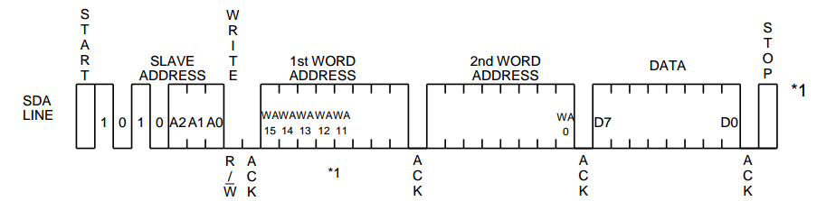
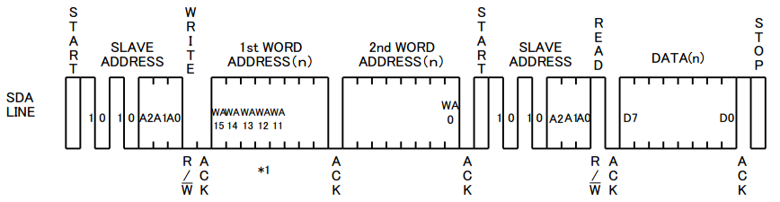
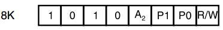
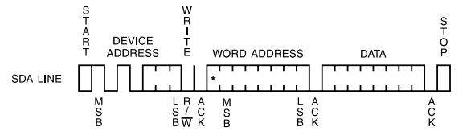

Electrically Erasable and Programmable Read-Only Memory
Introduction
Serial EEPROM devices are by far the most popular vehicle utilized in today’s modern electronic equipment to store personal preference and configuration data.
Applications span a wide spectrum of consumer, automotive, telecommunication, medical, industrial, and computing applications. This popularity stems from a unique combination of capabilities that cannot be found in any other memory solution. These features include:
- byte-write alterability
- nonvolatile data storage
- 1 million cycles of write endurance
- very low power supply voltage operation
- 100 year data retention
- low pin-count packages, low cost of ownership, and extremely low active and standby currents.
What is EEPROM?
Serial EEPROM
Serial EEPROM uses serial interfaces likes: I2C or SPI. For I2C EEPROM, Read/Write operation populary has two mode: Byte Write and Page Write.
Normaly, EEPROM data is 8 bit word. Each word is addressed by word address that its width depends on EEPROM size. For example, BR24G64-3A ROHM Semiconductor EEPROM with 64 Kb has to have 13 bit for addressing. Or AT24C08A Atmel EEPROM with 2 Kb uses 10 bit word address.
Now we will take a look at how EEPROM device manages word address.
Byte Write/Read
BR24G64-3A
With BR24G64-3A, it has 13 bit word address so timing for Byte Write Cycle will look like figure below.

In this case, I2C master need to use 4 bytes for writing: 1 device address byte, 2 byte for word address (15th to 13th bit are ignored) and 1 byte for data word. In Linux, we can using i2ctransfer (a program in i2c-tools) for write a byte to EEPROM. For example:
> i2ctransfer -y 1 w3@0x57 0x00 0x0a 0x55 (1)
Command (1) is used to write to device 0x57 in I2C bus 1. Data 0x55 will be writen to address: 0x000a.
Reading operation also has to use 2 bytes for word address. The difference here is using two I2C messages instead of using one I2C message in writing case.

i2ctransfer command for reading case.
> i2ctransfer -y 1 w2@0x57 0x00 0x00 r1
AT32C08A
AT32C08A uses 10 bit for word address. Although using more than 8 bit for word address, AT32C08A has different way in write/read with BR24G64-3A.
AT32C08A has to use 3 bytes for writing a byte: 1 device address byte, 1 byte for word address and 1 byte for data. To get 10 bit word address, AT32C08A borrows 2 LSB bit (P0 P1 in figure below) in device address byte.

So, I2C transfer will look like:
